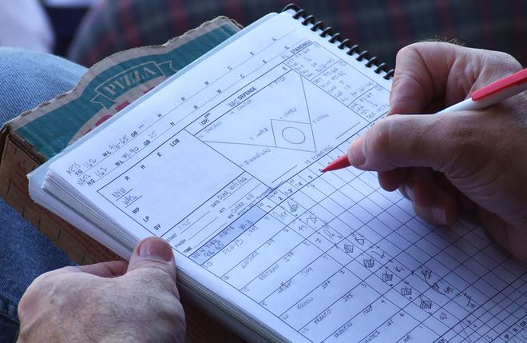

Nonostante molti “rumors” davano come possibili avversari una squadra tra Catalana, Lazio e Salerno l’ufficialità è arrivata la scorsa settimana quando si è appreso che i Lancieri avrebbero affrontato la squadra vincente del girone E.
T-Rex Pastrengo e White Sox Buttrio sono le due primatiste con 12 partite vinte e 2 perse, con parità anche negli scontri diretti che mostrano questi risultati:
-Andata 17/05/15 Pastrengo 7 – Buttrio 3
-Ritorno 11/07/15 Buttrio 4 – Pastrengo 3
E’ stato necessario uno spareggio, che si è svolto sabato 12 Settembre, per decretare la squadra vincente.
I White Sox Buttrio con un sonoro 8-2 (LEGGI ARTICOLO) hanno conquistato il proprio girone e saranno gli avversari del team lastrigiano.
La serie finale si giocherà al meglio delle 5 gare, pertanto la squadra che vincerà 3 partite potrà disputare il campionato superiore nella prossima stagione.
I Lancers avranno dalla loro parte il favore del campo per gara 3 e le eventuali gare 4 e 5, le prime due partite saranno disputate sul campo avversario di Buttrio (UD), questo il calendario:
-Gara 1: sabato 19/09 ore 15.30 Buttrio – Lancers
-Gara 2: sabato 19/09 ore 20.30 Buttrio – Lancers
-Gara 3: sabato 26/09 ore 15.30 Lancers – Buttrio
-Ev. Gara 4: domenica 27/09 ore 10.30 Lancers – Buttrio
-Ev. Gara 5: domenica 27/09 ore 15.30 Lancers – Buttrio
Sul sito dei nostri avversari possiamo visualizzare quelle che sono le statistiche del campionato, per quanto riguarda i dati di attacco la formazione veneta batte con una media di .317 di squadra, con 187 punti segnati.
Nello specifico De Faccio è leader nella media battuta con .500 e media bombardieri con .725; Querincing svetta come numero di valide (33) e RBI (20).
A conferma del buon livello del Buttrio ci sono anche le medie dei lanciatori, 76 punti subiti ma solamente 43 a carico dei lanciatori in 149 riprese per una media punti di 2.60.
Sempre De Faccio si distingue anche nelle statistiche di lancio con una media ERA di 1.17 in 92 IP con 184 K e 55 BB.
I numeri di questa squadra sono sicuramente importanti a dimostrazione che adesso si fa sul serio, i Lancers hanno però dimostrato di essere cresciuti molto in questa stagione riuscendo a vincere gare difficili con formazioni ben strutturate.
Le finali si sa sono ben differenti dal campionato, il doppio incontro inoltro è una novità per entrambe le formazioni ed il lavoro svolto da Ciappi con il parco lanciatori sarà molto utile in previsione di questa formula.
Non dimentichiamo che il lineup dei Lancieri presenta elementi di spessore come Diaz, Albano, Ciappi e Geri, lo stesso Geri ha interpretato perfettamente il ruolo di esterno centro diventando una sicurezza per l’intero reparto.
E’ sempre al centro del campo che abbiamo altre certezze difensive, il duo Degl’Innocenti-Pistol sono una macchina assemblata alla perfezione per il ruolo di interbase e seconda base.
L’eclettico Baratella, oltre ad essere un solido partente, contribuisce alla causa con mazza e guantone ricoprendo il ruolo di terza base così come il ritrovato Nannucci che ha fatto vedere cose buone sul monte e nel box nelle ultime uscite.
Il giovane e promettente Becattini si alternerà con Gentilini dietro a casa base, tornato per l’occasione ad indossare spikes e pettorina.
Il Capitano Nerbini non invecchia mai, solido in difesa e decisivo in attacco saprà dare il suo contributo anche in questa nuova avventura.
Lapini ha dato segnali più che positivi come partente sia in campionato che nelle partite seguenti, saranno sicuramente indispensabili i “gregari” Graceffa, Bini e Cicali sempre pronti a dare il proprio contributo a staff tecnico e compagni.
Conterà il gruppo che fortunatamente è unito e compatto, i numeri ed i calcoli li faremo a campionato finito.
Adesso ogni Lanciere dovrà dare il 110%, se così sarà il risultato finale sarà comunque un successo per la società ed i tecnici lastrigiani!
IN BOCCA AL LUPO LANCERS!!!!!!!!!!!!!!!